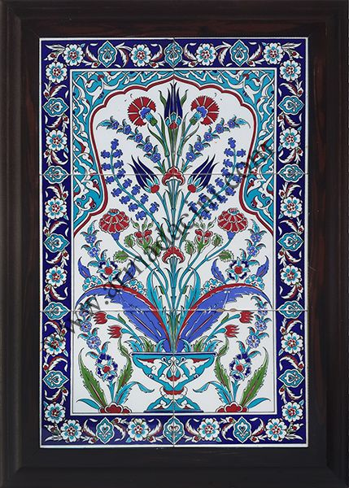

Kütahya Çini Sanatı
Yüzyıllık bir geleneğin yaşayan mirası
Tarihçe
Kütahya çiniciliği, 14. yüzyılda Anadolu Selçukluları döneminde başlayıp Osmanlı İmparatorluğu zamanında altın çağını yaşamış köklü bir el sanatıdır. Renkli sıraltı bezemeleri ve özgün motifleriyle dünya genelinde tanınan Kütahya çinileri, bugün hâlâ geleneksel yöntemlerle üretilmektedir.
"Kütahya çiniciliği, Anadolu'nun en özgün el sanatlarından biri olarak UNESCO tarafından da tanınmaktadır."

Çini Sanatının Özellikleri
Kullanılan Renkler
- Kobalt mavisi
- Firuze yeşili
- Mercan kırmızısı
- Patlıcan moru
- Sarı ve beyaz
Üretim Aşamaları
- Hamurun hazırlanması
- Şekillendirme ve kurutma
- Bisküvi pişirimi
- Sırlama ve boyama
- Son pişirim (1000°C)
Tarihsel Gelişim
| Dönem | Özellik | Öne Çıkan Eser |
|---|---|---|
| 14. Yüzyıl | Selçuklu etkisi, geometrik motifler | Ulu Camii çinileri |
| 16. Yüzyıl | Osmanlı altın çağı, çiçek motifleri | Topkapı Sarayı çinileri |
| 18. Yüzyıl | Figüratif tasvirler, Ermeni ustaları | Dini figür çinileri |
| Günümüz | Geleneksel ve modern füzyon | Turistik ürünler ve sanat eserleri |
Neden Önemli?
Ekonomik Değer
Kütahya'da 100'den fazla atölye ve fabrika çini üretimi yaparak binlerce kişiye istihdam sağlamaktadır.
Kültürel Miras
Nesiller boyu aktarılan bu sanat, Türk kültürünün ve el sanatlarının vazgeçilmez bir parçasıdır.
Uluslararası Tanınırlık
Kütahya çinileri dünyanın dört bir yanındaki müzelerde ve koleksiyonlarda yer almaktadır.